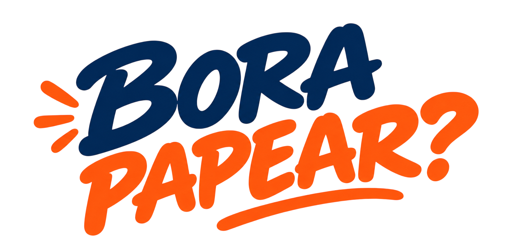
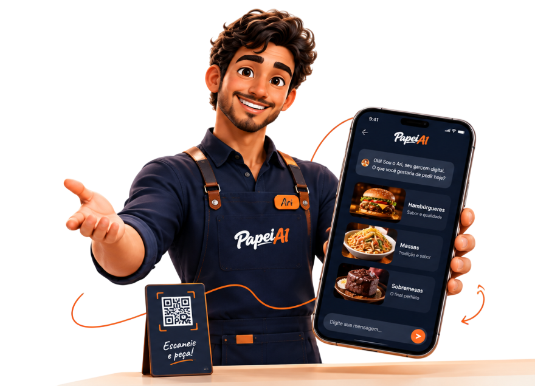
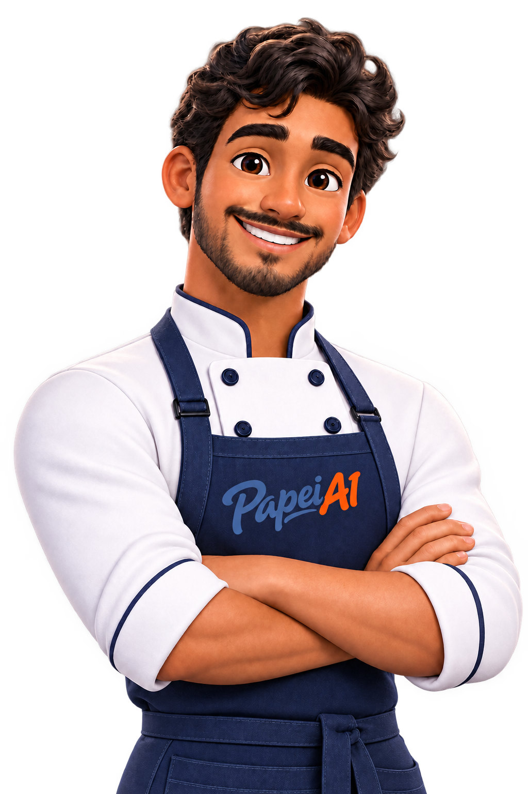

Seu cardápio que conversa com seus clientes.
O PapeiAI apresenta seus pratos, tira dúvidas, recomenda opções e ajuda cada cliente a encontrar o que realmente quer pedir.
Escaneia
Aponte a câmera do seu celular.
Papeia
Converse com o Ari e tire suas dúvidas.
Pede
Escolha seus pratos e finalize o pedido.
Cardápio sem app
O cliente escaneia o QR Code na mesa e já vê o cardápio completo.
O Ari atende
Recomenda pratos, responde dúvidas e ajuda o cliente a escolher.
Nunca fica ocupado
Enquanto o garçom atende outras mesas, o Ari já está ajudando esse cliente a escolher.
Seu cardápio, sua cara
Fotos, categorias e a logo do seu restaurante, do jeito que você quiser.
Você monta o cardápio
Pratos, preços, categorias e fotos (opcionais) direto no painel.
Gera o QR Code da mesa
Um QR Code por mesa, pronto pra imprimir — sem app pra instalar.
O Ari ajuda a escolher
Sugere pratos e tira dúvidas pelo chat, sem pressa e sem fila.
Cliente chama o garçom
Já decidido, é só chamar pra fechar o pedido.
Chama a gente no WhatsApp e te mostramos como funciona.
